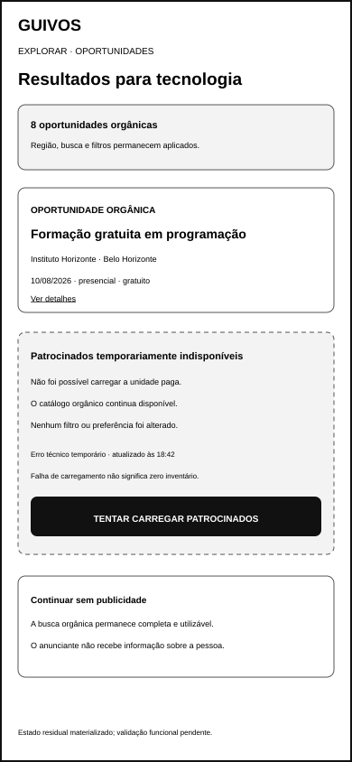
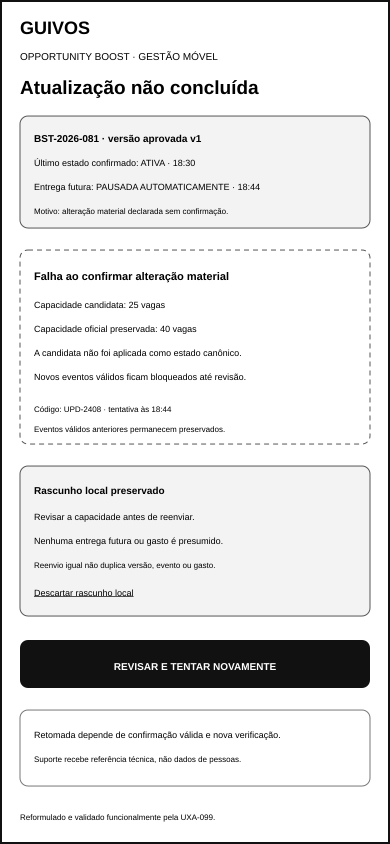
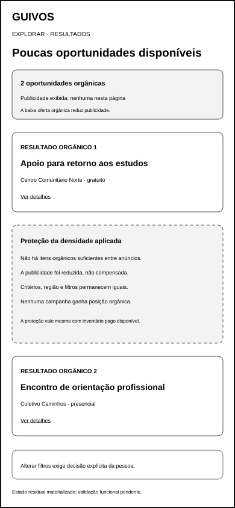
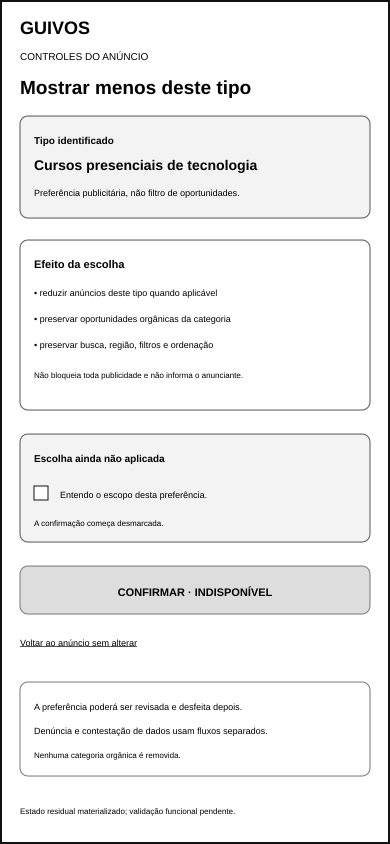
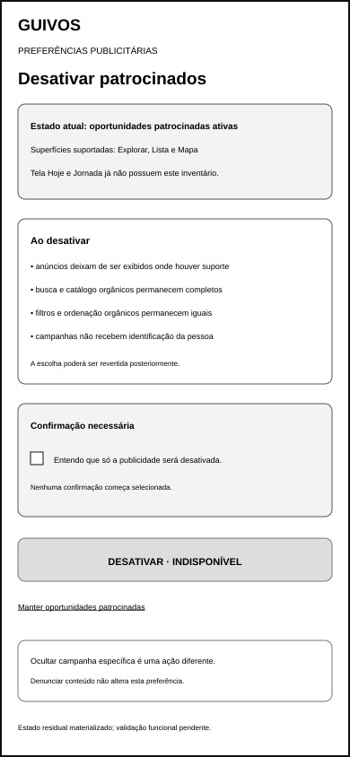
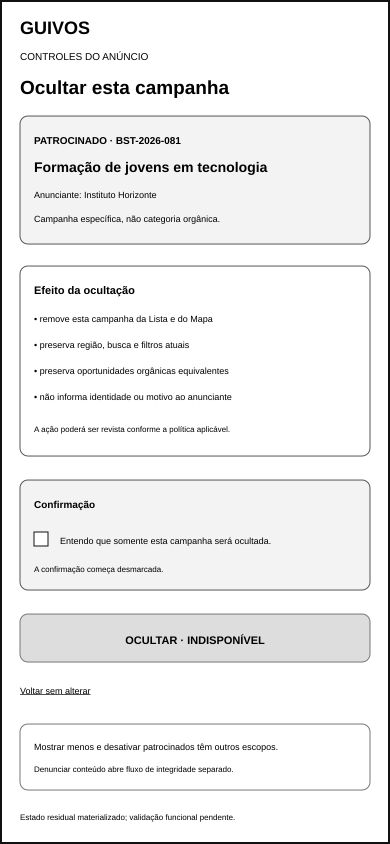
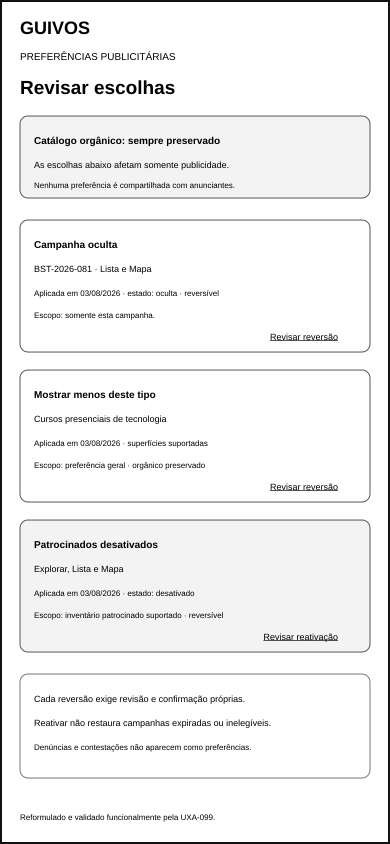
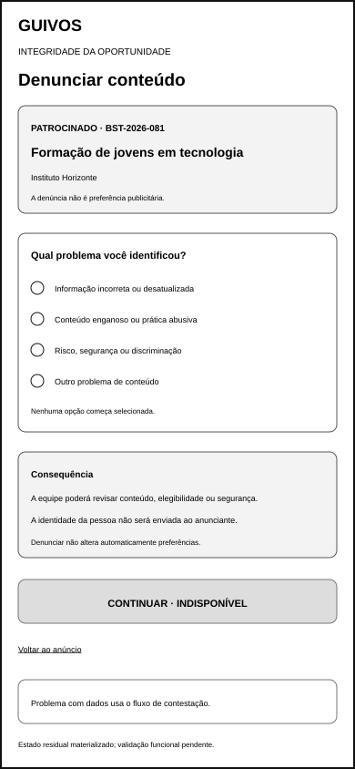
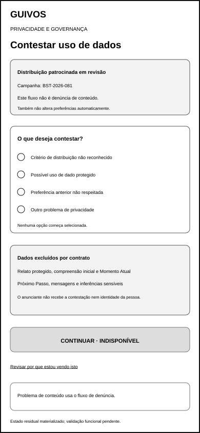

Estados Residuais do Opportunity Boost — Wireframes de Baixa Fidelidade¶
1. Finalidade¶
Este documento materializa estados residuais de continuidade técnica, proteção do inventário orgânico e controles da pessoa que permaneceram explicitamente fora dos pacotes anteriores do Opportunity Boost.
O incremento não altera os 36 wireframes já validados por seus respectivos pacotes. Ele acrescenta dez referências móveis que deverão passar por validação funcional especializada em ato posterior.
2. Escopo materializado¶
2.1 Continuidade técnica¶
- erro técnico temporário no carregamento de conteúdo patrocinado;
- falha ao carregar ou atualizar uma alteração no painel do anunciante.
2.2 Inventário e densidade¶
- nenhuma unidade patrocinada elegível para a consulta;
- baixa oferta orgânica restringindo publicidade.
2.3 Controles da pessoa¶
- mostrar menos de um tipo identificado;
- desativar oportunidades patrocinadas nas superfícies suportadas;
- ocultar uma campanha específica;
- revisar e desfazer preferências anteriores;
- denunciar conteúdo ou informação;
- contestar possível uso indevido de dados.
Denúncia e contestação são dois artefatos independentes. Nenhum deles é registrado como preferência publicitária.
3. Canal e dimensão¶
- canal: aplicativo móvel;
- largura de referência: 390 pixels;
- altura de referência: 844 pixels;
- orientação: retrato;
- fidelidade: baixa;
- contextos: Explorar, Lista, Mapa, controles do anúncio, preferências e gestão móvel do anunciante;
- estado: materialização ainda não validada funcionalmente.
4. Artefatos visuais¶
4.1 Erro técnico temporário patrocinado¶

docs/assets/wireframes/uxa-055-sponsored-technical-error-mobile.svg
Demonstra:
- catálogo orgânico acessível durante falha patrocinada;
- região, busca e filtros preservados;
- falha técnica distinta de zero inventário;
- tentativa limitada ao conteúdo patrocinado;
- continuidade sem publicidade como saída legítima;
- ausência de identificação da pessoa ao anunciante.
4.2 Falha de atualização do anunciante¶

docs/assets/wireframes/uxa-055-advertiser-update-failure-mobile.svg
Demonstra:
- último estado confirmado preservado;
- alteração candidata distinguível do estado oficial;
- nenhuma pausa, retomada, entrega ou gasto presumido;
- tentativa e referência técnica registradas;
- revisão antes de reenviar;
- suporte sem dados de pessoas.
4.3 Inventário patrocinado indisponível¶
docs/assets/wireframes/uxa-055-sponsored-inventory-unavailable-mobile.svg
Demonstra:
- consulta executada com zero unidades patrocinadas elegíveis;
- zero apurado distinto de falha técnica;
- critérios não ampliados automaticamente;
- resultados orgânicos preservados;
- atualização da consulta somente por ação explícita.
4.4 Baixa oferta orgânica¶

docs/assets/wireframes/uxa-055-low-organic-supply-mobile.svg
Demonstra:
- poucas oportunidades orgânicas disponíveis;
- publicidade reduzida ou não exibida;
- ausência de compensação por densidade, critérios ou repetição;
- filtros e ordenação orgânicos preservados;
- inventário pago sem direito de ocupar posição orgânica.
4.5 Mostrar menos deste tipo¶

docs/assets/wireframes/uxa-055-show-less-type-mobile.svg
Demonstra:
- tipo publicitário identificado;
- preferência separada de filtro de oportunidades;
- catálogo orgânico da categoria preservado;
- confirmação inicialmente desmarcada;
- reversão posterior disponível;
- denúncia e contestação fora do fluxo.
4.6 Desativar oportunidades patrocinadas¶

docs/assets/wireframes/uxa-055-disable-sponsored-opportunities-mobile.svg
Demonstra:
- superfícies suportadas explicitadas;
- Tela Hoje e Jornada fora do inventário;
- busca, filtros e catálogo orgânicos preservados;
- escolha reversível;
- confirmação afirmativa e inicialmente vazia;
- ocultação específica e denúncia mantidas separadas.
4.7 Ocultar campanha específica¶

docs/assets/wireframes/uxa-055-hide-campaign-mobile.svg
Demonstra:
- identificador da campanha e anunciante;
- remoção somente da campanha na Lista e no Mapa;
- preservação de busca, região, filtros e oportunidades orgânicas;
- identidade e motivo não revelados ao anunciante;
- confirmação inicialmente vazia;
- escopos de ocultação, redução e desativação separados.
4.8 Revisar e desfazer preferências¶

docs/assets/wireframes/uxa-055-review-reverse-preferences-mobile.svg
Demonstra:
- campanha oculta, tipo reduzido e patrocinados desativados em blocos próprios;
- data, superfície e escopo da escolha;
- reversões independentes;
- reativação sem restauração de campanha expirada ou inelegível;
- denúncias e contestações ausentes do histórico de preferências.
4.9 Denunciar conteúdo ou informação¶

docs/assets/wireframes/uxa-055-report-content-mobile.svg
Demonstra:
- fluxo de integridade da oportunidade;
- motivo ainda não selecionado;
- informação incorreta, conteúdo enganoso, risco ou outro problema;
- possível revisão de conteúdo, elegibilidade ou segurança;
- identidade da pessoa não enviada ao anunciante;
- ausência de alteração automática de preferência.
4.10 Contestar uso indevido de dados¶

docs/assets/wireframes/uxa-055-contest-data-use-mobile.svg
Demonstra:
- fluxo de privacidade e governança;
- critério desconhecido, dado protegido, preferência desrespeitada ou outro problema;
- conteúdo protegido explicitamente excluído;
- contestação não enviada ao anunciante;
- revisão da explicação de distribuição acessível;
- denúncia de conteúdo mantida em fluxo diferente.
5. Taxonomia de estados¶
ERRO TÉCNICO TEMPORÁRIO
→ consulta orgânica disponível; unidade patrocinada não carregada
ZERO INVENTÁRIO ELEGÍVEL
→ consulta concluída; nenhuma campanha atende aos critérios vigentes
BAIXA OFERTA ORGÂNICA
→ publicidade reduzida mesmo quando existe inventário pago
ATUALIZAÇÃO NÃO CONFIRMADA
→ último estado oficial preservado; rascunho não aplicado
PREFERÊNCIA EM REVISÃO
→ escolha ainda não aplicada até confirmação afirmativa
DENÚNCIA
→ integridade de conteúdo ou informação
CONTESTAÇÃO
→ privacidade, critérios ou possível uso indevido de dados
Os estados não poderão ser convertidos silenciosamente uns nos outros.
6. Ausência, zero, supressão e erro¶
A experiência deverá distinguir:
erro técnico temporário— não foi possível obter ou atualizar o estado;zero inventário elegível— consulta concluída sem unidade paga compatível;não aplicável— evento ou medição não pertence àquele momento;não disponível— dado não existe ou não foi instrumentado;não exibido por agregação— dado existe, mas não poderá ser mostrado;baixa oferta orgânica— proteção de densidade reduz publicidade.
Nenhum desses estados autoriza ampliar critérios, elevar densidade, inserir anúncios consecutivos ou representar ausência como zero sem apuração.
7. Continuidade técnica¶
Falha técnica deverá:
- preservar o último estado confirmado;
- mostrar data e horário da última confirmação;
- separar alteração candidata de estado oficial;
- evitar repetição automática destrutiva;
- não presumir entrega, pausa, retomada, gasto ou preferência;
- permitir tentativa consciente;
- preservar histórico técnico sem expor pessoas.
8. Inventário e proteção orgânica¶
Ausência ou redução de publicidade não poderá:
- reduzir resultados orgânicos;
- modificar busca, região ou filtros;
- ampliar segmentação;
- inserir anúncio como primeiro resultado orgânico;
- compensar baixa oferta com maior densidade;
- permitir duas unidades patrocinadas consecutivas;
- transformar campanha paga em correspondência orgânica.
9. Controles e reversibilidade¶
Os controles possuem escopos próprios:
Ocultar esta campanha— campanha específica na Lista e no Mapa;Mostrar menos deste tipo— preferência geral identificada;Não mostrar oportunidades patrocinadas— inventário nas superfícies suportadas;Revisar e desfazer preferências— leitura e reversão de escolhas anteriores;Denunciar conteúdo ou informação— integridade da oportunidade;Contestar uso indevido de dados— privacidade e governança.
Nenhuma escolha começa selecionada. Preferência negativa prevalece sobre entrega contratada.
10. Denúncia e contestação¶
Denúncia poderá tratar:
- informação incorreta ou desatualizada;
- conteúdo enganoso;
- prática abusiva;
- risco, segurança ou discriminação;
- outro problema de integridade.
Contestação poderá tratar:
- critério de distribuição não reconhecido;
- possível uso de dado protegido;
- preferência anterior não respeitada;
- outro problema de privacidade.
A abertura de um fluxo não seleciona, encerra ou registra automaticamente o outro.
11. Proteção de dados¶
- relato protegido não alimenta publicidade;
- compreensão inicial, Momento Atual e Próximo Passo permanecem excluídos;
- mensagens e inferências sensíveis permanecem excluídas;
- anunciante ou financiador não recebe identidade, motivo, preferência ou contestação da pessoa;
- nenhum perfil publicitário individual é criado;
- suporte técnico recebe somente a referência necessária ao tratamento do erro.
12. Perguntas para validação funcional posterior¶
A validação especializada deverá verificar:
- erro técnico é distinguível de zero inventário?
- o catálogo orgânico permanece utilizável durante falha patrocinada?
- o último estado confirmado é reconhecido no painel do anunciante?
- alteração não confirmada evita ação operacional implícita?
- zero inventário preserva critérios sem ampliação automática?
- baixa oferta orgânica reduz publicidade de forma compreensível?
- ocultar, reduzir e desativar possuem escopos distinguíveis?
- confirmações começam vazias?
- reversão explica o que será restaurado e o que não poderá ser restaurado?
- denúncia e contestação são reconhecidas como fluxos diferentes?
- nenhuma ação reduz catálogo, busca, Lista ou Mapa orgânicos?
- identidade da pessoa permanece protegida?
13. Estado funcional¶
materialized_not_functionally_validated — ten low-fidelity residual-state mobile wireframes created; technical continuity, zero versus failure, organic-density protection, preference scopes, reversibility, reporting and data-contestation separation require specialized functional validation.
14. Cobertura resultante¶
O Opportunity Boost passa a possuir:
- 46 wireframes materializados;
- 36 wireframes funcionalmente validados por seus respectivos pacotes;
- 10 estados residuais móveis ainda pendentes de validação funcional;
- 25 artefatos preservados sob a autoridade transversal histórica da UXA-050.
15. Limites¶
Este incremento não cria:
- validação funcional dos dez novos artefatos;
- política final de categorias publicitárias;
- política final de tratamento de denúncias e contestações;
- limiar definitivo de agregação e privacidade;
- algoritmo de entrega, leilão ou frequência;
- antifraude técnico;
- perfil publicitário individual;
- tecnologia cartográfica;
- design visual final;
- acessibilidade técnica;
- protótipo navegável;
- teste com usuários;
- checkout, cobrança, campanha real ou Engenharia de Produto.
16. Próximos atos governados¶
Após integração e nova autorização, poderão ocorrer separadamente:
- validar funcionalmente e reformular os dez estados residuais da UXA-055;
- validar transversalmente os 46 wireframes, se priorizado;
- definir protocolo de protótipo de baixa ou média fidelidade;
- preparar plano de teste com Pessoas, Organizações e Coletivos;
- desenvolver políticas especializadas de publicidade, privacidade, denúncia e contestação.
Nenhum ato é iniciado automaticamente.